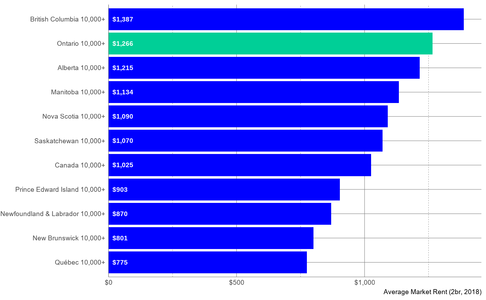
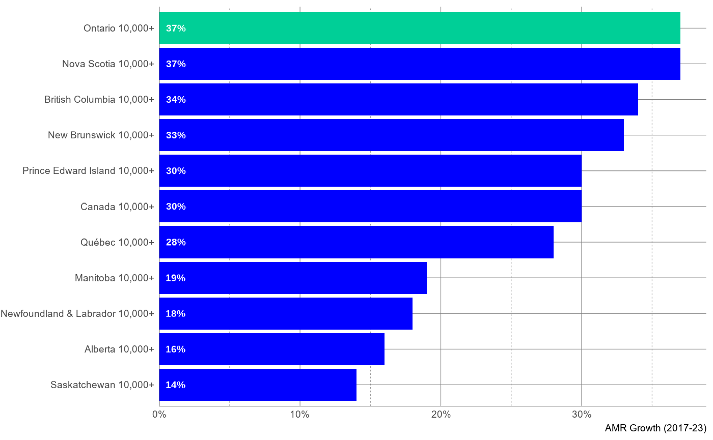
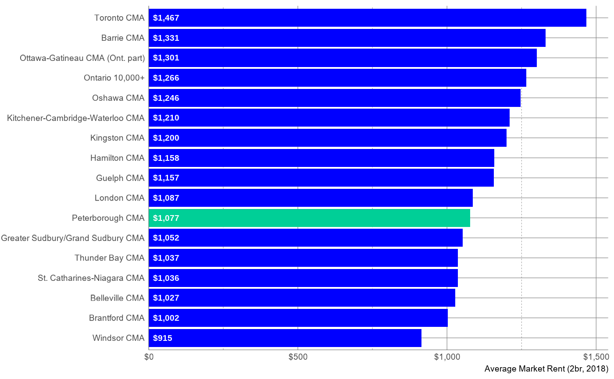
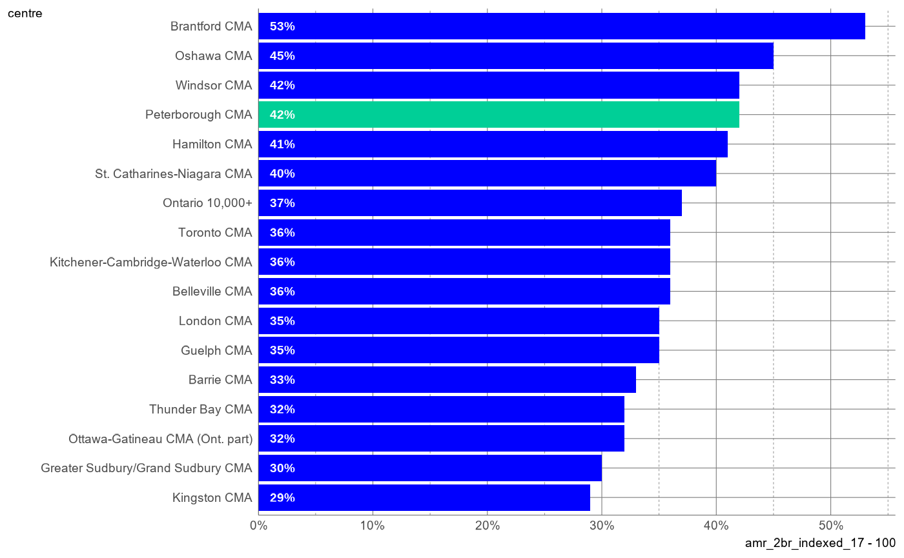
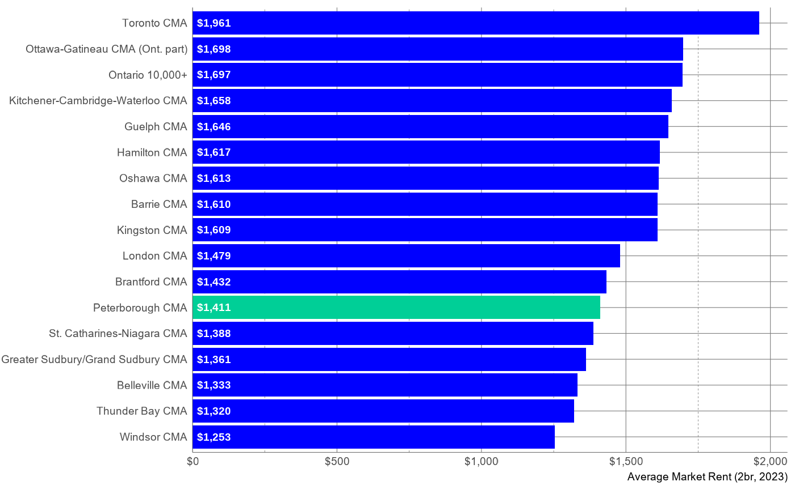
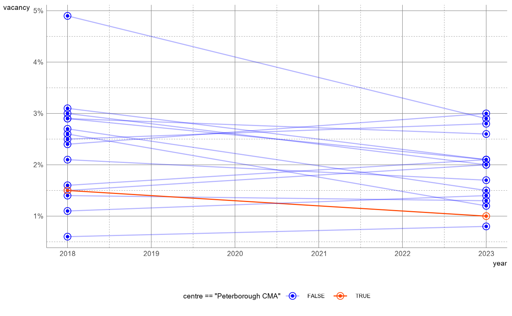
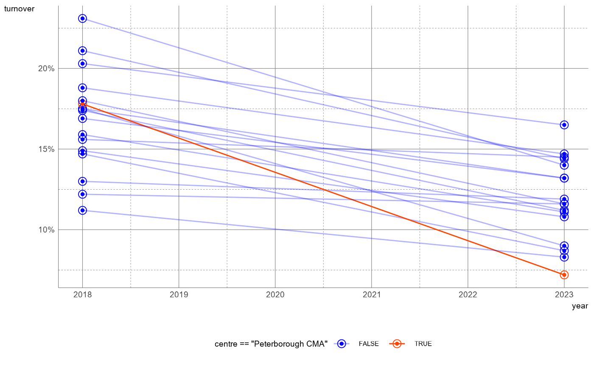

Peterborough’s Rental Market
library(rms)
library(tidyverse)
local_theme <- function() {
bptheme::theme_blueprint(
plot_background = "white",
base_size = 14,
strip_text_size = 14
)
}Overview
Over the past five years, renting an apartment in Peterborough has become dramatically less affordable. Falling turnover rates (the lowest in the province as of 2023) tell us that more tenants are staying put to preserve their rent control protections. This trend indicates that the rent increases documented in the Rental Market Report (and examined here) understate the market changes experienced by tenants moving to and within Peterborough. Though prices have increased, low vacancy rates suggests that demand has grown faster than supply, that rents will continue rising, and that—without intervention remaining housed in Peterborough will continue to become less affordable over time.
Data
reactable::reactable(rmr_t1)Provincial Context
In 2018, the earliest year for which Rental Market Report data are available, AMR for an urban two-bedroom apartment in Ontario was $1,266, second only to British Columbia.
rmr_t1 |>
filter(
centre |> str_detect(province),
centre |> str_detect("10"),
year == 2018) |>
arrange(amr_2br) |>
mutate(centre = fct_inorder(centre)) |>
ggplot(aes(amr_2br, centre)) +
geom_col(aes(fill = centre |> str_detect("Ontario"))) +
geom_text(aes(x = 15, label = scales::dollar(amr_2br)), hjust = 0, size = 14, fontface = "bold", size.unit = "pt", colour = "white") +
bpscales::scale_fill_blueprint(guide = "none", discrete = TRUE, type = "bipolar", option = "blue_green") +
scale_x_continuous(labels = scales::dollar_format(accuracy = 1), expand = expansion(mult = c(0, .05))) +
local_theme() +
labs(x = "Average Market Rent (2br, 2018)", y = NULL)
Between 2017 and 2023, CMHC’s fixed-sample AMR for an urban two-bedroom apartment in Ontario increased by 37%, tied for the highest proportional increase with Nova Scotia.
rmr_t1 |>
filter(year == 2023, centre |> str_detect(province)) |>
arrange(amr_2br_indexed_17) |>
mutate(centre = fct_inorder(centre)) |>
ggplot(aes(amr_2br_indexed_17 - 100, centre)) +
geom_col(aes(fill = centre |> str_detect("Ontario"))) +
geom_text(aes(x = .5, label = scales::percent(amr_2br_indexed_17 - 100, scale = 1, accuracy = 1)), fontface= "bold", hjust = 0, size = 14, size.unit = "pt", colour = "white") +
bpscales::scale_fill_blueprint(guide = "none", discrete = TRUE, type = "bipolar", option = "blue_green") +
scale_x_continuous(labels = scales::percent_format(scale = 1, accuracy = 1), expand = expansion(mult = c(0, .05))) +
local_theme() +
labs(x = "AMR Growth (2017-23)", y = NULL)
Rent in Peterborough
In 2018, AMR for an urban two-bedroom apartment in Peterborough was a relatively affordable $1,077, ranking 10th of the 16 Ontario CMAs represented in the data.
rmr_t1 |>
filter(
province == "Ontario",
year == 2018) |>
arrange(amr_2br) |>
mutate(centre = fct_inorder(centre)) |>
ggplot(aes(amr_2br, centre)) +
geom_col(aes(fill = centre |> str_detect("Peterborough CMA"))) +
geom_text(aes(x = 15, label = scales::dollar(amr_2br)), hjust = 0, size = 14, fontface= "bold", size.unit = "pt", colour = "white") +
bpscales::scale_fill_blueprint(guide = "none", discrete = TRUE, type = "bipolar", option = "blue_green") +
scale_x_continuous(labels = scales::dollar_format(accuracy = 1), expand = expansion(mult = c(0, .05))) +
local_theme() +
labs(x = "Average Market Rent (2br, 2018)", y = NULL)
Between 2017 and 2023, Peterborough’s fixed-sample 2-bedroom AMR increased by 42%, the fourth highest proportional increase among Ontario CMAs represented in the data, behind Brantford, Oshawa, and Windsor, and 5ppt higher than the provincial average of 37%.
rmr_t1 |>
filter(year == 2023, province == "Ontario") |>
arrange(amr_2br_indexed_17) |>
mutate(centre = fct_inorder(centre)) |>
ggplot(aes(amr_2br_indexed_17 - 100, centre)) +
geom_col(aes(fill = centre |> str_detect("Peterborough"))) +
geom_text(aes(x = 1, label = scales::percent(amr_2br_indexed_17 - 100, scale = 1, accuracy = 1)), fontface = "bold", hjust = 0, size = 14, size.unit = "pt", colour = "white") +
bpscales::scale_fill_blueprint(guide = "none", discrete = TRUE, type = "bipolar", option = "blue_green") +
scale_x_continuous(labels = scales::percent_format(scale = 1, accuracy = 1), expand = expansion(mult = c(0, .05))) +
local_theme()
While a 2-bedroom apartment in Peterborough remains relatively affordable compared to other Ontario CMAs, the 2023 AMR of $1,411 is still a dramatic increase from 2018.
rmr_t1 |>
filter(year == 2023, province == "Ontario") |>
arrange(amr_2br) |>
mutate(centre = fct_inorder(centre)) |>
ggplot(aes(amr_2br, centre)) +
geom_col(aes(fill = centre |> str_detect("Peterborough CMA"))) +
geom_text(aes(x = 15, label = scales::dollar(amr_2br)), hjust = 0, size = 14, fontface = "bold", size.unit = "pt", colour = "white") +
bpscales::scale_fill_blueprint(guide = "none", discrete = TRUE, type = "bipolar", option = "blue_green") +
scale_x_continuous(labels = scales::dollar_format(accuracy = 1), expand = expansion(mult = c(0, .05))) +
local_theme() +
labs(x = "Average Market Rent (2br, 2023)", y = NULL)
Market Pressures
Between 2018 and 2023, the vacancy rate in Peterborough fell from 1.5% to 1%, the second lowest rate among Ontario CMAs represented in the data.
rmr_t1 |>
filter(
!is.na(vacancy),
province == "Ontario",
year %in% c(2018, 2023),
centre |> str_detect("10", negate = TRUE)
) |>
ggplot(aes(year, vacancy, group = centre)) +
geom_path(aes(colour = centre == "Peterborough CMA", alpha = centre == "Peterborough CMA")) +
geom_point(aes(colour = centre == "Peterborough CMA"), shape = 21, size = 3) +
geom_point(aes(colour = centre == "Peterborough CMA"), size = 1) +
local_theme() +
scale_y_continuous(labels = scales::percent_format(accuracy = 1)) +
bpscales::scale_color_blueprint(
discrete = TRUE,
type = "bipolar",
option = "blue_coral"
) +
scale_alpha_manual(
values = c(.3, 1)
)
Between 2018 and 2023, rental market turnover slowed in Peterborough even more than it did in Ontario as a whole. Over the same period, turnover in Peterborough fell from 18% to just 7%, the lowest rate among Ontario CMAs represented in the data.
rmr_t1 |>
filter(
year %in% c(2018, 2023),
province == "Ontario"
) |>
ggplot(aes(year, turnover, group = centre)) +
geom_path(aes(colour = centre == "Peterborough CMA", alpha = centre == "Peterborough CMA")) +
geom_point(aes(colour = centre == "Peterborough CMA"), shape = 21, size = 3) +
geom_point(aes(colour = centre == "Peterborough CMA"), size = 1) +
local_theme() +
scale_y_continuous(labels = scales::percent_format(accuracy = 1)) +
bpscales::scale_color_blueprint(
discrete = TRUE,
type = "bipolar",
option = "blue_coral"
) +
scale_alpha_manual(
values = c(.3, 1)
)